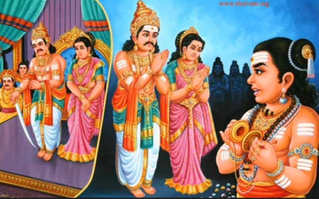

Mangayarkarasi Nayanar- Born a Chola princess, —the holy Saivite saints of South India—and one of only three women to attain this distinction. Married to Pandya king Nedumaran (Koon pandian) is said to have revived Shaivism in the kingdom with the help of Thirugnanasambandhar where he recited his famous Manthiramavathu Neeru.
